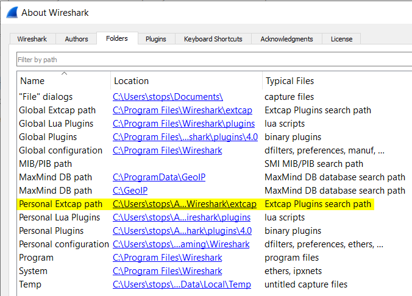
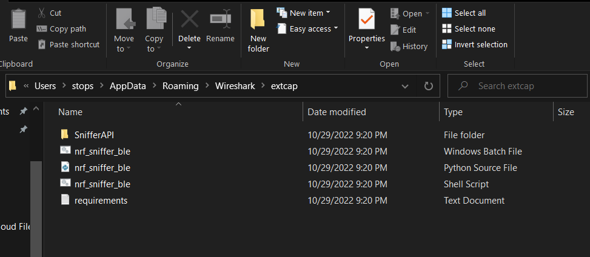
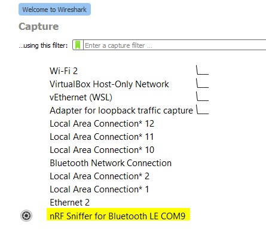
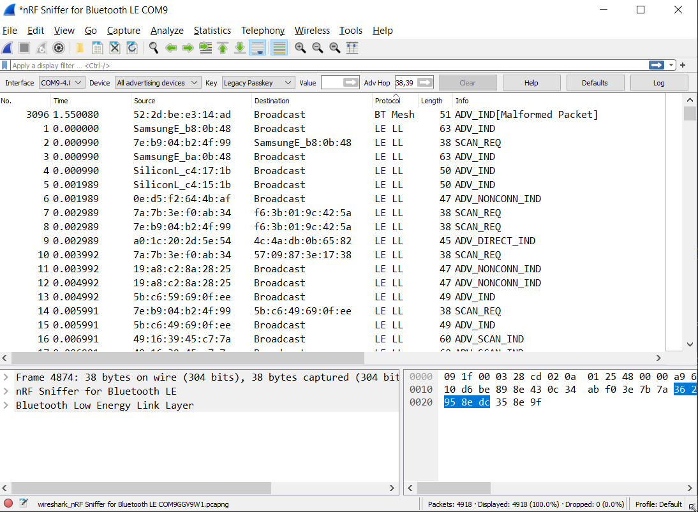

Tools Needed
For this project we're going to be sniffing traffic of a cheap smartwatch that's connected to a Nokia C100. I got a generic Chinese made smartwatch branded as a BOFIDAR watch that can be used as a fitness tracker, heart rate monitor, blood oxygen monitor, blood pressure monitor and sleep monitor off of Amazon for about $25. It uses a custom app that can be downloaded through the Google Play store or Apple store for free called Dafit. Since I wasn't too keen on putting this App on my personal phone I decided to get a cheap burner phone from Best Buy for about $40.
We'll also need to set up a bluetooth dongle so that we can use Wireshark to sniff the bluetooth traffic. For this we’re going to use the Adafruit ItsyBitsy nRF52840 Express. But any dongle that has the nRF52840 chipset from Nordic Semiconductor will work for our purposes. There’s a few steps that need to be taken to get the dongle to work properly with Wireshark.
Setting up the nRF52840 and Wireshark
- After plugging in the dongle to your computer, press the reset button twice and the dongle should mount as a storage device. Download the Sniffer UF2 firmware file from Adafruit.
- If Python 3 not on your system, install it now.
- Install Wireshark to sniff the packets
- Download the Nordic nRF Bluetooth sniffer plugin
- To install the plugin, first we have to locate where "extcap" folder lives on our harddrive. We can do this by opening the Help menu and going to "About Wireshark" 
- The plugin will come as a ZIP file. Navigate to the extcap path and drop the files from the nordic zip into the folder 
- Plug in the nRF52840 and open Wireshark, the dongle should show up 
- Double click on the nRF52840 and Wireshark should begin collecting packets 